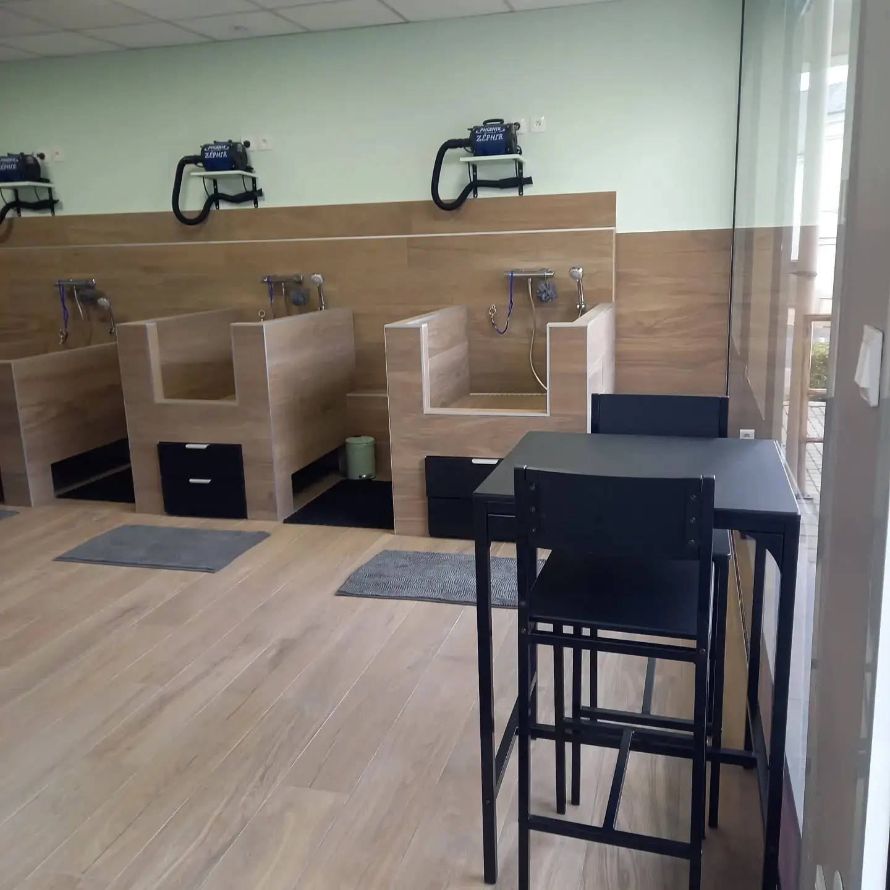
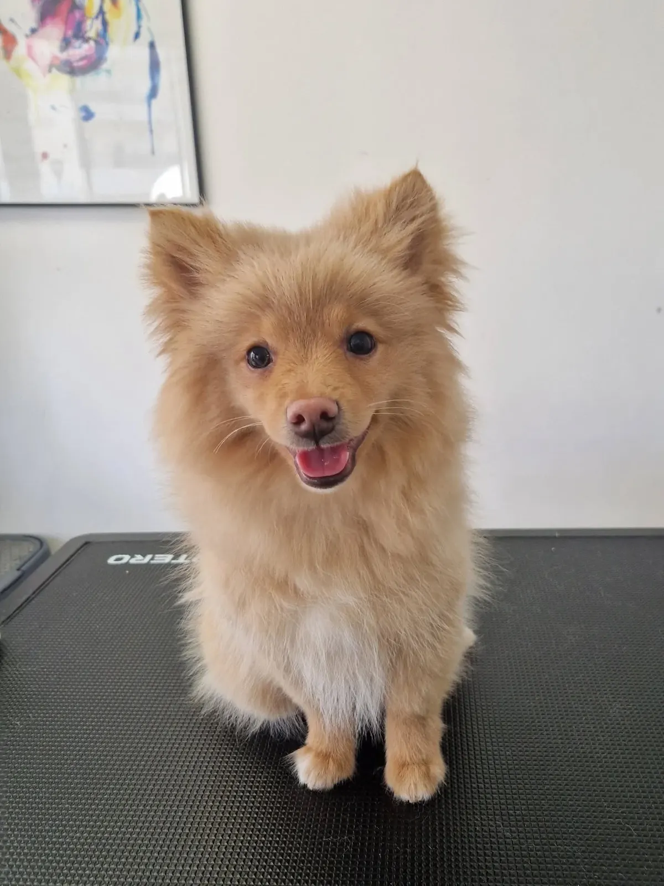
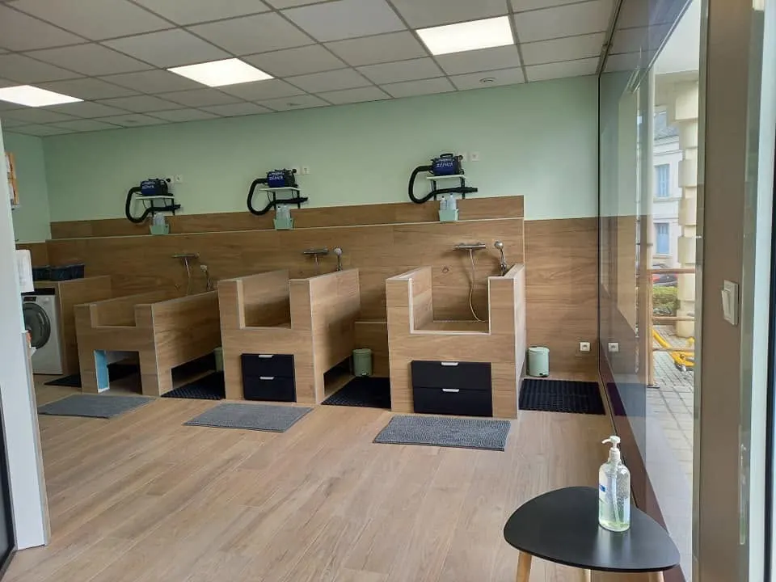
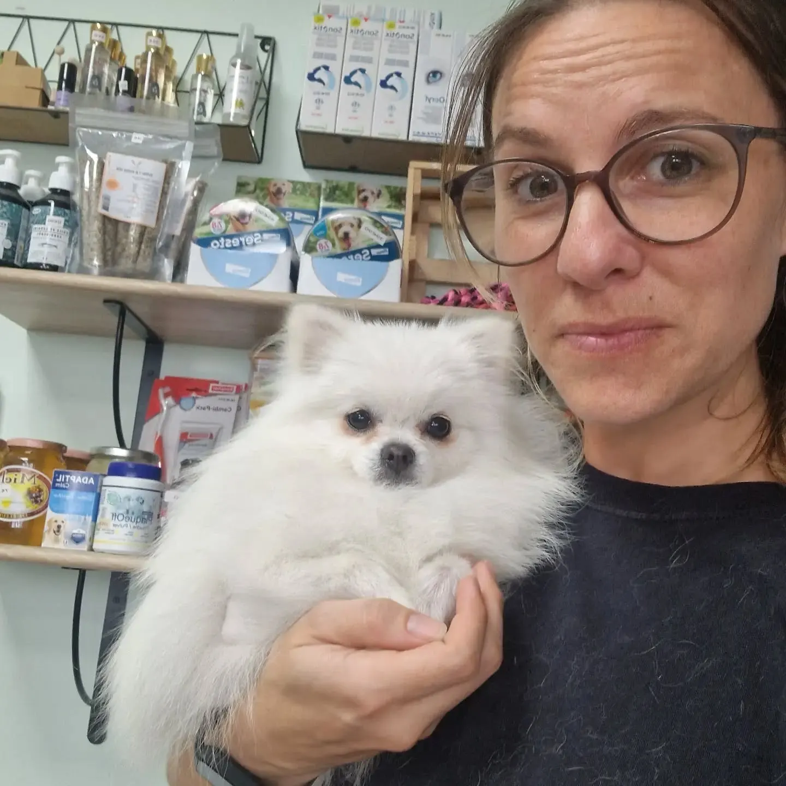
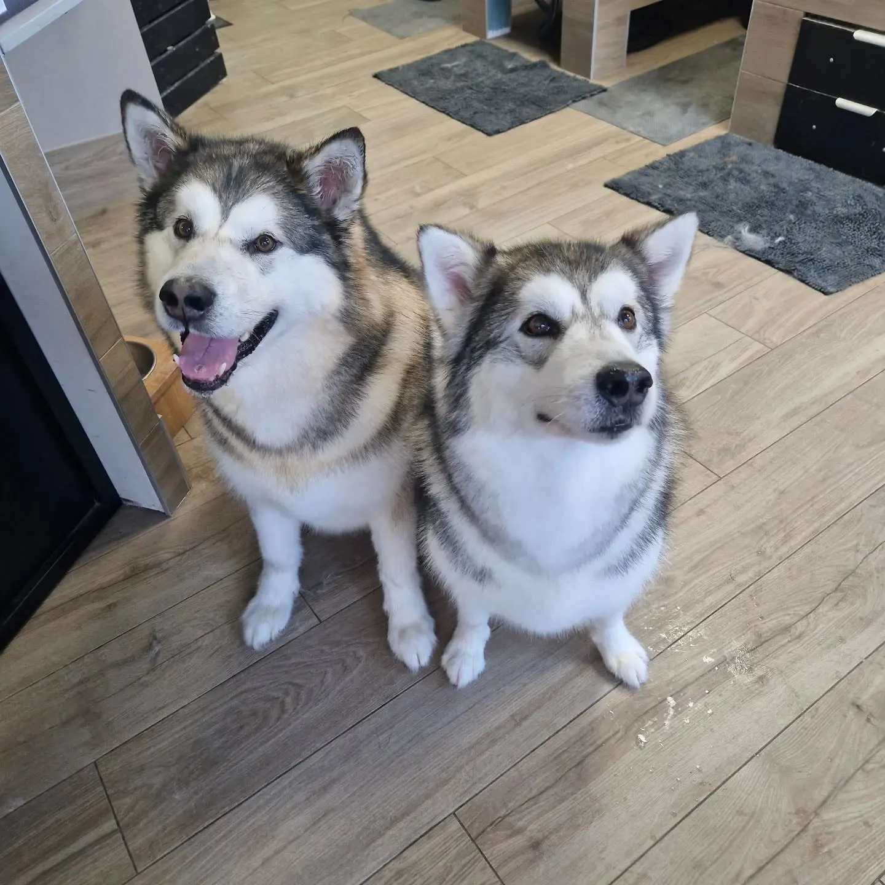
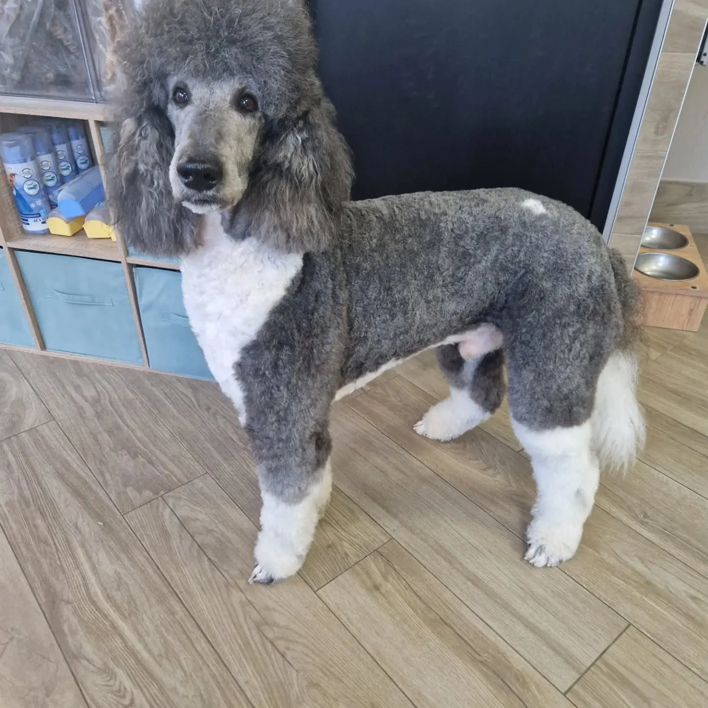
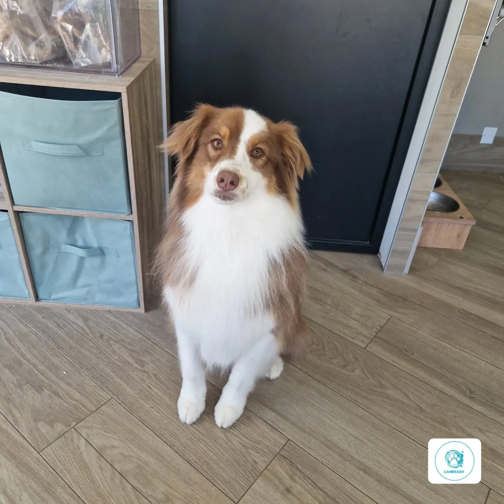
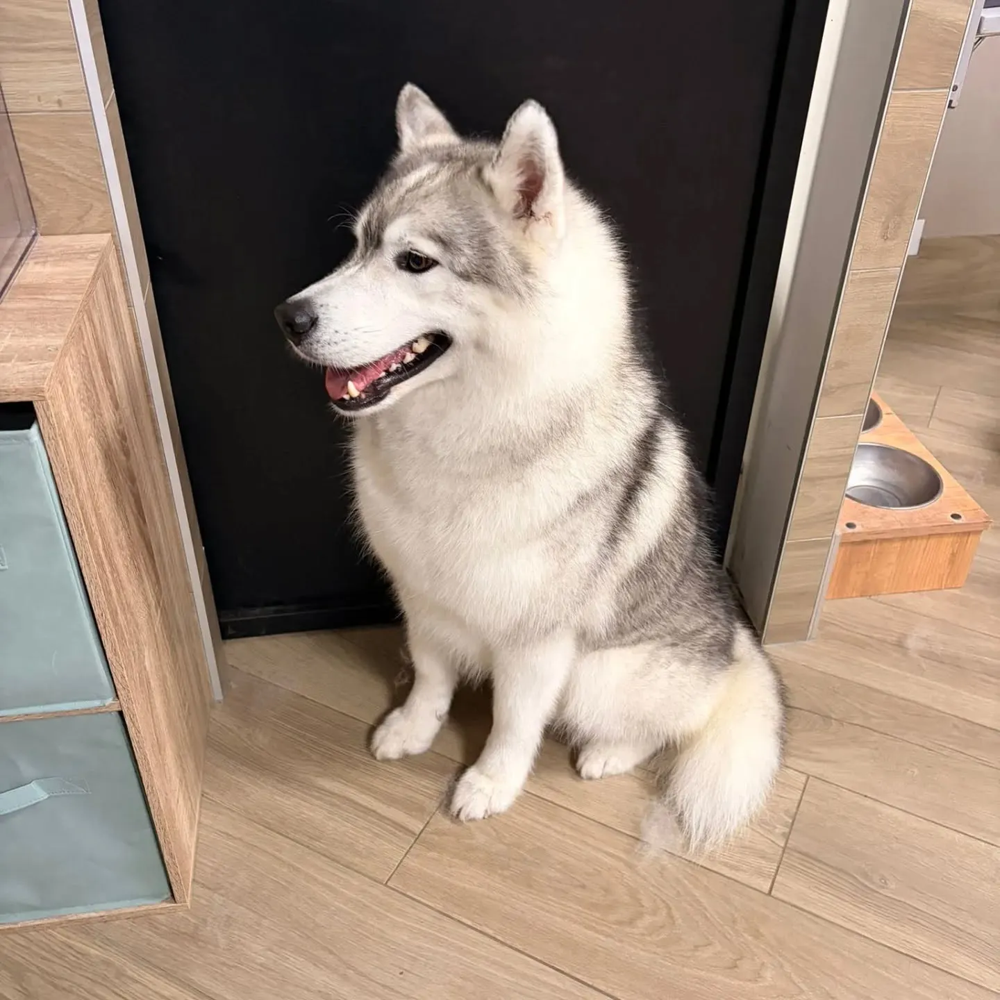
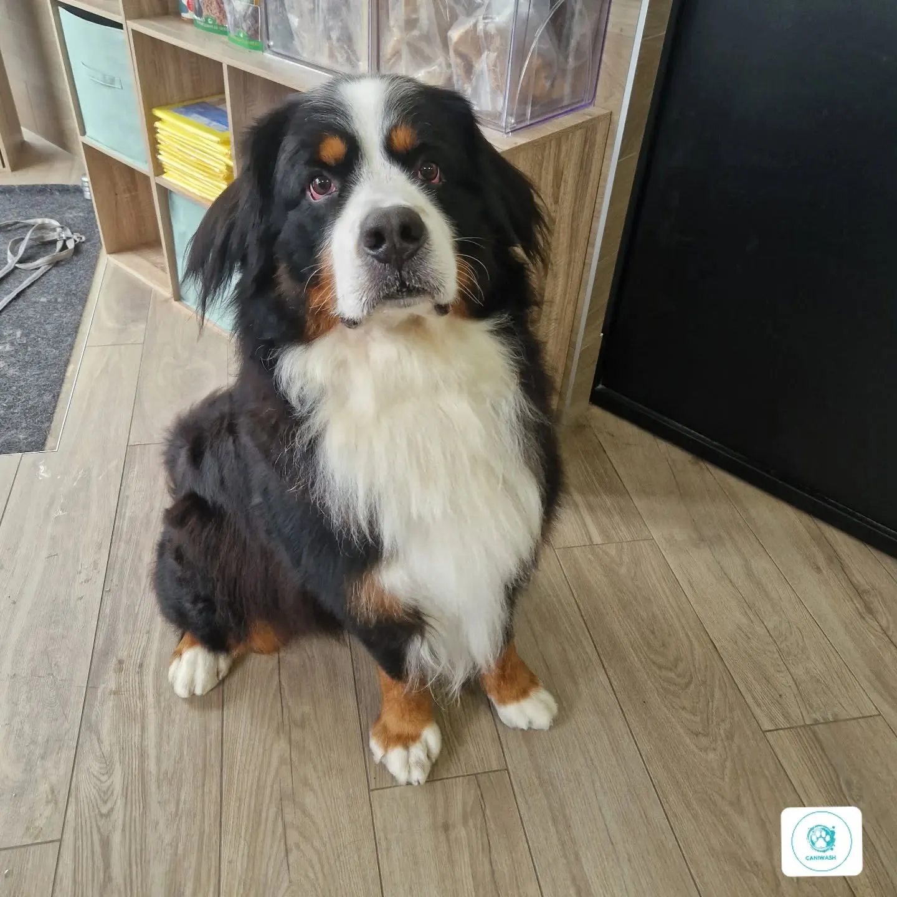
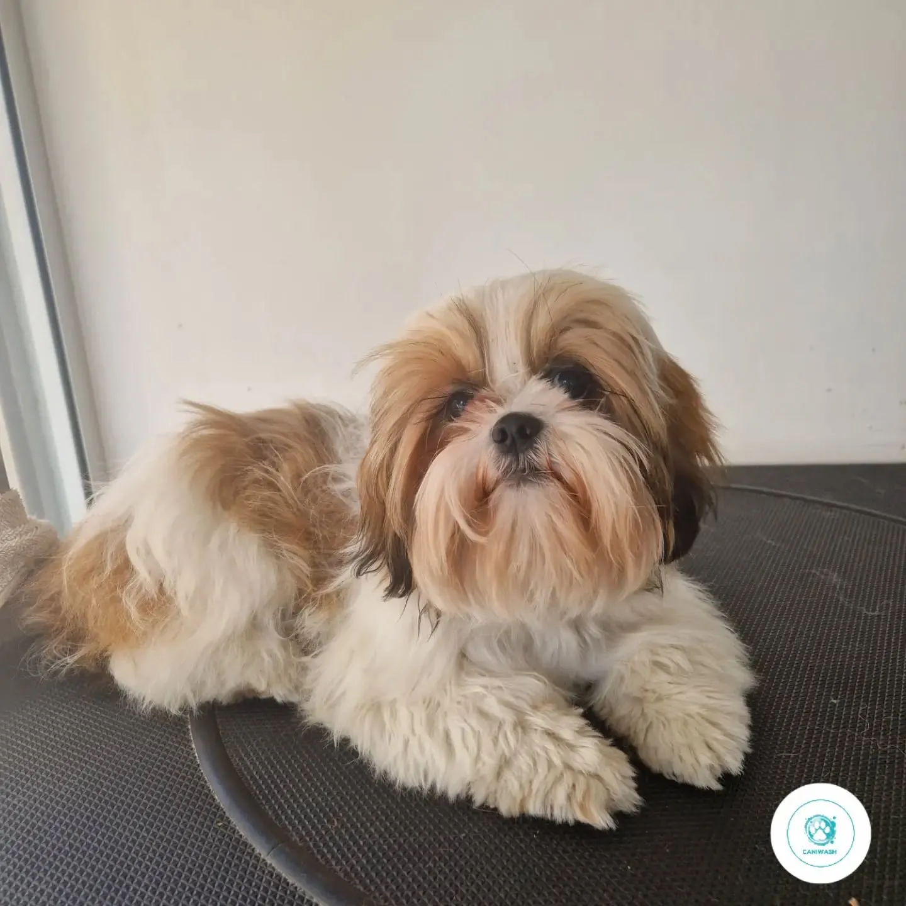

Toilettage & lavage libre-service · Joué-lès-Tours
Le toilettage par Céline, le lavage par vous.

Les baignoires du libre-serviceséchoirs au mur, matériel fourni

Caniwash, c'est un salon de toilettage et de bien-être animal, et un centre de lavage pour chiens en libre-service : brosses, shampooing professionnel adapté au pelage et séchage, tout est fourni à votre arrivée.
- 5,0 sur 5114 avis sur Google
- Toilettagepetits, grands, poils courts ou longs
- Libre-servicetout le matériel fourni
- Joué-lès-Tours1 rue des Ribains
Fini le bain dans la baignoire ou au jet d'eau dans le jardin.
Le libre-service, c'est laver vous-même votre chien, au salon. À votre arrivée, tout est fourni :
Brossage
Le matériel de brossage est fourni.
Shampooing
Un shampooing professionnel adapté au pelage de votre animal.
Séchage
Le nécessaire pour le séchage, aux séchoirs muraux.
Une question avant de venir ? Céline répond au 07 65 83 46 18.

Trois baignoires en bois

Céline, au salon

Un bon toilettage, c'est avant tout prendre soin du chien tout en respectant ce que la nature lui a donné.Céline, toiletteuse chez Caniwash
Le toilettage, bien plus qu'un beau poil.
Le toilettage ne se résume pas à rendre le poil plus beau. Il permet aussi d'éliminer les poils morts, de limiter les nœuds et les bourres, de garder une peau saine et de contribuer au confort et au bien-être de votre compagnon.
Petits, grands, poils courts ou longs : chacun a droit à son moment de soin et d'attention.





1 rue des Ribains, à Joué-lès-Tours.
Rendez-vous en ligne, ou par téléphone aux horaires du salon. Pour le libre-service, un appel suffit pour toute information.
37300 Joué-lès-Tours
| Lundi, mardi | 9 h – 18 h |
|---|---|
| Mercredi | fermé |
| Jeudi, vendredi | 9 h – 18 h |
| Samedi | 9 h – 15 h |
| Dimanche | fermé |